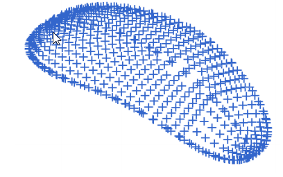

week6-9 <<
Previous Next >> cad_history第18章
week10-14
NX 12 for Engineering Design
在本章中，您將學習如何在NX 12中創建自由曲面。至此，您已經學習了使用“表單特徵”或“草圖繪製”創建模型的不同方法。
cad_history第18章
7.1概述
在NX 12中，“自由格式功能”選項位於菜單→插入→表面/網格表面/掃描/法蘭表面和菜單→編輯→表面等不同位置，以進行更高級的操作。
7.1.1從點創建自由特徵
如果您要構造或預先存在的數據僅包含點，則可以嘗試使用以下三個選項之一從給定點構建曲面。
按 Menu, 按Insert → Surface
Four Point Surface: 如果您有四個角點。
Through Points: 如果這些點形成一個矩形陣列。
From Poles: 如果定義的點形成與通過它們的線相切的矩形陣列。
7.1.2通過節字符串創建自由格式特徵
如果構造幾何包含連接對象（曲線和邊）的字符串，則可以使用以下兩個選項之一來創建自由曲面。
按 Menu, 按 Insert → Mesh Surface
Ruled: 如果您有兩個大致平行的字符串
Through Curves:如果三個或更多字符串大致平行。
Through Curve Mesh: 如果在每個方向（平行和垂直）上至少有四個弦且至少有兩個弦，則使用此命令。
Swept: 如果至少兩個部分字符串大致相同，則使用垂直
7.1.3從面孔創建自由特徵
如果構造幾何包含圖紙或面，則可以使用以下兩個選項之一來構造自由曲面。
Offset Surface: 如果您要偏移面，請使用此選項。
Extension: 如果您有邊曲線或曲線，請使用此選項。
7.2自由格式功能建模
讓我們來進行一些自由結構建模的練習，其中包括結構化點，點雲，曲線和麵。
打開文件freeform_thrupoints.pr
右鍵單擊工具欄，並確保已選中“曲面工具欄”
您將看到七行點。
選Insert →Surface →Through Points
對話框如下圖所示彈出。
Patch Type, 選 Multiple
Closed Along, 選 Neither
Row Degree and Column Degree, 都選 3.
按下 OK
下一個對話框將如上圖所示
按Chain from All
選擇最左行的頂部起點和底部終點，如下圖所示
點的第一行將突出顯示。
重複相同的過程以選擇點的前四行。
之後，將彈出一個窗口，詢問是否指定了所有點或是否要指定另一行。
按 Specify Another Row 直到所有行都被指定的
指定所有行後，選擇“All Points Specified”
在“Through Points”窗口上單擊“Cancel”
您將看到如下所示的表面。
7.2.2使用點雲建模
打開名為freeform_cloud.prt的文件
點雲將如下所示。

按Insert → Surface → Fit Surface
將出現以下對話框。
單擊屏幕上的，選擇屏幕上的所有點點雲。
在Fit Direction下拉菜單中，選擇Best Fit。 這使點雲坐標係與原始系統匹配
將U度和V度的默認值更改為3
按 OK
最終表面將如下所示。
7.2.3使用曲線建模
打開名為freeform_thrucurves_parameter.prt的文件
曲線如下圖所示
按下 Insert → Mesh Surface → Through Curves
選擇第一個section string，如下所示。 確保選擇圓弧左側的某個位置。
方向矢量顯示在字符串的末尾。
單擊鼠標中鍵MB2或單擊Add New Set
單擊與第一個相似的下一條曲線，然後單擊鼠標中鍵MB2。 您可以看到兩條
曲線之間生成的曲面，如下圖所示
重複相同的過程以選擇其餘的字符串。 選擇每條曲線後，請記住單擊MB2（或“Add New Set”）
Alignment, 按 Parameter
Patch Type, 按 Single
Construction, 按 Simple
當選擇“簡單”選項時，系統將嘗試構建盡可能簡單的表面並最小化面片的數量。
按OK
7.2.4使用曲線和面建模
打開名為freeform_thrucurves_faces.prt的文件
曲線和面將如上圖所示
按 Insert →Mesh Surface →Through Curves
選擇頂面的edge1
選擇edge-2，然後單擊MB2
選擇edge-3
在對話框的“Alignment”部分下，取消選中“Alignment”複選框
您將在屏幕上顯示以下形狀。
確保所有箭頭都指向相同的方向（如果不是，請雙擊任意一個箭頭以反轉其方向）。
在“Alignment”對話框中，選擇“Parameter”
在“Continuity”對話框的“for First Section”中，選擇“ G2（Curvature)”選項，然後選擇頂面的兩個色塊。
按 APPLY
現在選擇edge-3，然後單擊MB2
選擇下平面的三個邊緣
在“for First Section”的“Continuity”對話框中將選項更改為G2（Curvature）
選擇剛創建的表面，然後單擊MB2。
對於“Continuity”的”Last Section”，選擇“ G2（Curvature）”，然後選擇底部的三個色塊作為參考
單擊OK退出
最終的自由曲面應如下所示
cad_history第19章
cad_history第20章
week6-9 <<
Previous Next >> cad_history第18章